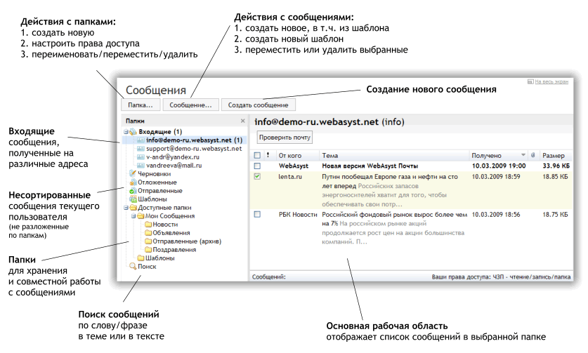

WebAsyst Почта одним взглядом |
Получение сообщенийWebAsyst Почта позволяет получать сообщения на адреса двух типов: Внутренние – адреса, созданные на почтовом сервере WebAsyst, на том домене, на котором работает ваш WebAsyst аккаунт. Например: alex@account..
Внешние – адреса, созданные в общедоступных почтовых системах или на корпоративных почтовых серверах. Например: alex@mail.ru; alex@alexcompany.ru. Это означает, что сервис WebAsyst Почта может использоваться как сборщик почты, или как интегратор множества почтовых систем, позволяющий в одном аккаунте работать с сообщениями, приходящими на различные почтовые адреса. Каждый почтовый ящик представлен отдельной веткой в папке Входящие. Доставка почты осуществляется автоматически. При поступлении нового сообщения название почтового ящика получателя выделяется жирным, а в скобках выводится общее количество новых непрочитанных сообщений.
|
Создание и настройка почтовых ящиков
При создании внутреннего почтового ящика (на домене вашего аккаунта WebAsyst) вам достаточно ввести часть электронного адреса (до значка @) и указать имя ящика, которое будет отображаться в папке Входящие и в реквизите From в исходящих сообщениях, отправленных с этого адреса. После этого новый почтовый адрес будет немедленно создан на почтовом сервере WebAsyst. При создании внешнего почтового ящика, необходимо заполнить форму, состоящую из следующих полей:
|
POP/IMAP доступ к внутренним почтовым ящикамВаш почтовый ящик, созданный на сервере WebAsyst (напр., alex@account.), может быть доступен из других почтовых клиентов, например: Outlook, The Bat!, Eudora и т.д. Для предоставления такого доступа, зайдите в папку Входящие и щелкните ссылку "Изменить настройки" для соответствующего почтового адреса. В форме настройки щелкните по ссылке "Открыть доступ POP/IMAP" и далее используйте указанные параметры для настройки вашего почтового клиента. Доступ из других почтовых клиентов всегда можно закрыть, воспользовавшись ссылкой "Закрыть POP/IMAP доступ".
|
Создание сообщенийЧтобы создать новое сообщение нажмите в панели инструментов кнопку Создать сообщение. В форме Новое сообщение введите адреса получателей, тему и текст вашего сообщение. WebAsyst Почта позволяет вам без большого труда создавать хорошо оформленные и легко читаемые сообщения. Панель редактора содержит все основные инструменты, необходимые для форматирования текста (выделение, подчеркивание, выравнивание, отступы и т.д.), а также средства для встраивания изображений, ссылок и переменных персонализации в текст письма, о чем более подробно написано далее в данном руководстве. |
Выбор отправителя (От кого)Имя и электронный адрес текущего пользователя используются по умолчанию в качестве отправителя сообщения. Это имя и адрес будут отображаться в почтовой программе получателя вашего сообщения в реквизитах From (От кого) и, соответственно, будут использоваться в качестве обратного адреса, если получатель вашего сообщения щелкнет кнопку Ответить (Reply) в своей почтовой программе. Помимо собственного адреса, в качестве адреса отправителя допускается выбор любого из адресов, которые зарегистрированы в папке Входящие. Однако, такой выбор возможен только для тех пользователей, которые имеют доступ к данной папке. |
Выбор получателейВ поле Кому в форме создания сообщения введите адреса получателей, разделенные запятой (,) или точкой с запятой (;). По мере набора адреса откроется список совпадающих адресов из сервиса Контакты. При этом в списке будут предложены для выбора те контакты, у которых электронный адрес или имя начинаются с тех же символов, которые вы успели набрать. Под полем Кому расположены ссылки Копия и Скрытая копия. Щелкните по ним, если вам необходимо ввести адреса получателей соответствующих копий сообщения. Откроются поля для добавления адресов, в которых работают такие же правила ввода, как и в поле Кому. Если у вас есть предварительно подготовленные в сервисе WebAsyst Контакты списки получателей ваших сообщений, то под полем Кому появится ссылка Списки. Щелкните по ней и выберите те списки, в которые вы хотите отправить данное сообщение. Такой метод выбора получателей очень эффективен при массовой рассылке, например, новостных писем вашим подписчикам. |
Добавление изображенийЧтобы вставить изображение в тело вашего сообщения, разместите курсор в том месте текста, куда вы хотите поместить изображение. Затем щелкните по кнопке Следует отметить, что добавленные таким образом изображения не увеличивают размер исходящего сообщения, в отличии от прикрепленных файлов. Файл картинки фактически останется в вашем WebAsyst аккаунте, а у получателя сообщения она откроется в теле письма по ссылке. Такой способ отправки изображений существенно лучше, чем рассылка вложенных файлов. Он гарантирует быструю доставку сообщений без риска превышения допустимого размера почтового ящика на стороне получателя. |
 в панели инструментов редактора и используйте кнопку Обзор... для выбора файла. После загрузки файл изображения сразу появится в тексте сообщения, где можно будет изменить его размер или место расположения (просто перетащив в другое место в тексте).
в панели инструментов редактора и используйте кнопку Обзор... для выбора файла. После загрузки файл изображения сразу появится в тексте сообщения, где можно будет изменить его размер или место расположения (просто перетащив в другое место в тексте).Прикрепление файловДля добавления прикрепленного файла, щелкните по ссылке Прикрепить файл в нижней части формы создания сообщения. Допускается прикрепление нескольких файлов, однако их общий размер может быть ограничен параметрами вашего аккаунта.
|
Отложенная отправкаWebAsyst Почта позволяет отправить сообщение в назначенную дату/время в будущем. Для этого в форме создания сообщения щелкните по ссылке Запланировать отложенную рассылку, укажите будущие дату и время и нажмите кнопку Отправить. Ваше сообщение получит статус "Отложенное". Такие сообщения по умолчанию попадают в папку Отложенные, однако вы можете переместить их в любую из доступных папок. Сообщения со статусом "Отложенное" отображаются в списке зеленым курсивом. Запланированную отправку таких сообщений можно отменить, или изменить дату/время отправки. |
Персонализация сообщенийWebAsyst Почта позволяет вам добавлять в сообщения личные данные получателей (имена, адреса и т.д.). Это реализуется с помощью так называемых переменных, или специальных обозначений, которые нужно добавить в текст письма, и которые динамически заменяются на реальные значения из базы данных ваших контактов во время отправки сообщения. Такая возможность особенно полезна для массовых рассылок - вам достаточно сделать одно сообщение для всех. У каждого получателя это сообщение будет выглядеть так, как если бы вы писали его персонально для этого получателя. Чтобы добавить переменную в сообщение, поставьте курсор в нужном месте в тексте письма и затем нажмите кнопку в панели инструментов редактора. Выберите переменную в списке и щелкните по ней. Переменная будет добавлена в текст, например: {C_FIRSTNAME} или {C_LASTNAME}. Запомнив точное написание переменных, вы можете их просто печатать в тексте вашего сообщения, не обращаясь к инструменту выбора {не забывайте фигурные скобки}. Во время отправки сообщения все переменные заменяются на реальные значения, как показано в примере ниже:
|
Добавление ссылки для отписки в исходящие сообщенияПри массовых рассылках стандартной практикой является размещение в письме специальной ссылки для отписки получателей от последующих рассылок. Более того, при отсутствии такой ссылки в сообщении получатель может пожаловаться на спам, и ваш IP-адрес (а вслед за этим и ваш WebAsyst-аккаунт) будут заблокированы почтовым сервером получателя. Для добавления ссылки отписки щелкните по кнопке выбора переменных в панели инструментов и затем щелкните по переменной {UNSUBSCRIBE} в конце списка. В текст письма будет добавлено слово Отписка, которое является гиперссылкой на специальную страницу. Вы можете изменить текст «Отписка» на другой, например: «отписаться от будущих рассылок». Однако, не следует менять HTML-код, связанный с этим текстом. |
Организация и работа с сообщениямиВ левой части главного экрана расположена навигационная панель Папки. Она предназначена для организации разнообразных сообщений и состоит из следующих секций:
Отложенные: в этой папке сохраняются сообщения, отправка которых назначена на дату/время в будущем.
Шаблоны: новый шаблон, созданный с помощью команды Сообщения... / Создать новый шаблон сохраняется в этой папке.
|
Персональные папки пользователяСледующие папки являются персональными. Сообщения, которые в них хранятся, доступны только пользователю, создавшему эти сообщения:
Всякий раз когда вы создаете новое сообщение или шаблон, оно попадает в одну из перечисленных папок. Другим пользователям вашего WebAsyst аккаунта эти сообщения недоступны до тех пор, пока вы не переместите их в одну из папок совместного доступа, в секции Доступные папки. |
Папки совместного доступа
К следующим секциям возможно настроить совместный доступ для пользователей вашего WebAsyst аккаунта:
Секция Доступные папки предназначена для постоянного хранения и совместной работы с сообщениями. В этой секции сообщения организованы в папки и вложенные подпапки. Для каждой папки возможно предоставление одного из следующих уровней доступа отдельным пользователям и/или группам пользователей:
Для настройки доступа, щелкните Папка -> Настроить права доступа. Вы можете настроить права индивидуально для каждого на закладке Пользователи, или использовать закладку Группы для настройки прав для групп пользователей. При установке прав доступа применяется комбинация персональных и групповых прав, как в примере ниже:
|
Статусы сообщенийКаждое сообщение имеет один следующих статусов (каждый статус имеет свой цвет):
|
Действия с сообщениями и папкамиПеремещение сообщений: выберите сообщения в списке и далее команду Сообщение... -> Переместить в панели инструментов. Затем выберите папку, в которую вы хотите переместить сообщения.
Для удаления выбранных сообщений используйте команду Сообщение... -> Удалить. Чтобы добавить новую папку, щелкните Папка... -> Добавить в панели инструментов и введите имя новой папки. Новая папка будет добавлена как вложенная в текущую. Если вы хотите создать корневую папку, то прежде перейдите в ветку "Доступные папки" и затем щелкните Папка... -> Добавить в панели инструментов. Для перемещения папки, перейдите в нужную папку и используйте команду Папка... -> Переместить в панели инструментов. Для удаления папки используйте команду Папка... -> Удалить.
|